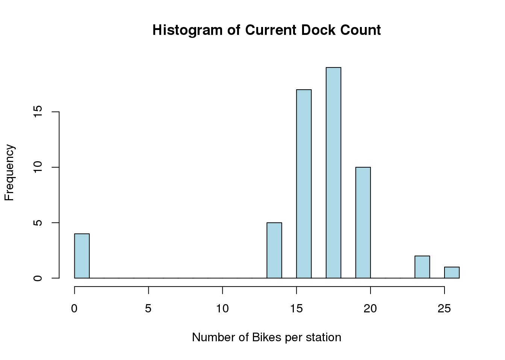

This is an exploration of bicycle-sharing data in the city of Seattle, WA (USA) from October 2014 - August 2016. I hope to eventually combine this data with other forms of ride-sharing and transportation in the city, but this will be the first step.
Time to get started!
# For data manipulation and tidying
library(dplyr)
library(lubridate)
library(tidyr)
# For mapping
library(ggmap)
library(mapproj)
library(dplyr)
# For data visualizations
library(ggplot2)
library(gridExtra)
# For modeling and machine learning
library(caret)
library(readr)All of the data can be downloaded from the bicycle-sharing service website or from Kaggle. This project contains 3 data sets and I’ll import and inspect each data file independently.
station <- read.csv(file = "station.csv", header = TRUE,
stringsAsFactors = FALSE)
trip <- read.csv(file = "trip.csv", header = TRUE,
stringsAsFactors = FALSE)
weather <- read.csv(file = "weather.csv", header = TRUE,
stringsAsFactors = FALSE)Ok, let’s take a look at each of these data files.
\(\bf station\)
str(station)'data.frame': 58 obs. of 9 variables:
$ station_id : chr "BT-01" "BT-03" "BT-04" "BT-05" ...
$ name : chr "3rd Ave & Broad St" "2nd Ave & Vine St" "6th Ave & Blanchard St" "2nd Ave & Blanchard St" ...
$ lat : num 47.6 47.6 47.6 47.6 47.6 ...
$ long : num -122 -122 -122 -122 -122 ...
$ install_date : chr "10/13/2014" "10/13/2014" "10/13/2014" "10/13/2014" ...
$ install_dockcount: int 18 16 16 14 20 18 20 20 20 18 ...
$ modification_date: chr "" "" "" "" ...
$ current_dockcount: int 18 16 16 14 20 18 20 18 20 18 ...
$ decommission_date: chr "" "" "" "" ...Looks like this dataset is dealing with 9 variables:
Station ID : The individual ID number for a bike station
Name : The name of that station ID, also appears to be the rough location of the station
Latitude : The latitude of the station
Longitude : The longitude of the station
Install Date : When that particular station was installed (in MM/DD/YYYY format)
Install Dock Count : Number of docks (bike positions) available at each station on installation day
Modification Date : When a particular station was modified (in MM/DD/YYYY format)
Current Dock Count : Number of docks (bike positions) available at each station on August 31, 2016
Decommission Date : The date that a particular station was put out of service (in MM/DD/YYYY format)
\(\bf Trip\)
'data.frame': 50793 obs. of 12 variables:
$ trip_id : int 431 432 433 434 435 436 437 438 439 440 ...
$ starttime : chr "10/13/2014 10:31" "10/13/2014 10:32" "10/13/2014 10:33" "10/13/2014 10:34" ...
$ stoptime : chr "10/13/2014 10:48" "10/13/2014 10:48" "10/13/2014 10:48" "10/13/2014 10:48" ...
$ bikeid : chr "SEA00298" "SEA00195" "SEA00486" "SEA00333" ...
$ tripduration : num 986 926 884 866 924 ...
$ from_station_name: chr "2nd Ave & Spring St" "2nd Ave & Spring St" "2nd Ave & Spring St" "2nd Ave & Spring St" ...
$ to_station_name : chr "Occidental Park / Occidental Ave S & S Washington St" "Occidental Park / Occidental Ave S & S Washington St" "Occidental Park / Occidental Ave S & S Washington St" "Occidental Park / Occidental Ave S & S Washington St" ...
$ from_station_id : chr "CBD-06" "CBD-06" "CBD-06" "CBD-06" ...
$ to_station_id : chr "PS-04" "PS-04" "PS-04" "PS-04" ...
$ usertype : chr "Member" "Member" "Member" "Member" ...
$ gender : chr "Male" "Male" "Female" "Female" ...
$ birthyear : int 1960 1970 1988 1977 1971 1974 1978 1983 1974 1958 ...Looks like this dataset is dealing with 9 variables:
Trip ID : An identification number assigned to each trip (from one bike station to another)
Start Time : The time and date that a bike was borrowed from a station (in MM/DD/YYYY HH:MM format)
Stop Time : The time and date that a bike was returned to a station (in MM/DD/YYYY HH:MM format)
Bike ID : The identification number for a specific bike
Trip Duration : Time of trip (measured in seconds)
From Station Name : The name of the station where the bike was borrowed from
To Station Name : The name of the station where the bike was returned to
From Station ID : The ID number of the station where the bike was borrowed from
To Station ID : The ID number of the station where the bike was returned to
User Type : Indicates whether the user was a “Member” (i.e., someone with a monthly or annual membership to Pronto!) or a “Short-Term Pass Holder” (i.e., someone who purchased a 24 hour or 3 day pass)
Gender : The gender of the rider (if known)
Birth Year : The year that the rider was born
\(\bf Weather\)
str(weather)'data.frame': 689 obs. of 21 variables:
$ Date : chr "10/13/2014" "10/14/2014" "10/15/2014" "10/16/2014" ...
$ Max_Temperature_F : int 71 63 62 71 64 68 73 66 64 60 ...
$ Mean_Temperature_F : int 62 59 58 61 60 64 64 60 58 58 ...
$ Min_TemperatureF : int 54 55 54 52 57 59 55 55 55 57 ...
$ Max_Dew_Point_F : int 55 52 53 49 55 59 57 57 52 55 ...
$ MeanDew_Point_F : int 51 51 50 46 51 57 55 54 49 53 ...
$ Min_Dewpoint_F : int 46 50 46 42 41 55 53 50 46 48 ...
$ Max_Humidity : int 87 88 87 83 87 90 94 90 87 88 ...
$ Mean_Humidity : int 68 78 77 61 72 83 74 78 70 81 ...
$ Min_Humidity : int 46 63 67 36 46 68 52 67 58 67 ...
$ Max_Sea_Level_Pressure_In : num 30 29.8 30 30 29.8 ...
$ Mean_Sea_Level_Pressure_In: num 29.8 29.8 29.7 29.9 29.8 ...
$ Min_Sea_Level_Pressure_In : num 29.6 29.5 29.5 29.8 29.7 ...
$ Max_Visibility_Miles : int 10 10 10 10 10 10 10 10 10 10 ...
$ Mean_Visibility_Miles : int 10 9 9 10 10 8 10 10 10 6 ...
$ Min_Visibility_Miles : int 4 3 3 10 6 2 6 5 6 2 ...
$ Max_Wind_Speed_MPH : int 13 10 18 9 8 10 10 12 15 14 ...
$ Mean_Wind_Speed_MPH : int 4 5 7 4 3 4 3 5 8 8 ...
$ Max_Gust_Speed_MPH : chr "21" "17" "25" "-" ...
$ Precipitation_In : num 0 0.11 0.45 0 0.14 0.31 0 0.44 0.1 1.43 ...
$ Events : chr "Rain" "Rain" "Rain" "Rain" ...This dataset represents quite a bit of weather data in 21 variables.
Date : The date in MM/DD/YYYY format
Max Temperature F : The maximum temperature that day (in degrees F)
Mean Temperature F : The average temperature that day (in degrees F)
Min Temperature F : The minimum temperature that day (in degrees F)
Max Dew Point F : The maximum dew point (in degrees F)
Mean Dew Point F : The average dew point (in degrees F)
Min Dew Point F : The minimum dew point (in degrees F)
Max Humidity : The maximum humidity (in %)
Mean Humidity : The average humidity (in %)
Min Humidity : The minimum humidity (in %)
Maximum Sea Level Pressure : The maximum atmospheric pressure at sea level (in inches of mercury)
Mean Sea Level Pressure : The average atmospheric pressure at sea level (in inches of mercury)
Min Sea Level Pressure : The minimum atmospheric pressure at sea level (in inches of mercury)
Max Visibility Miles : The maximum visibility (in miles)
Mean Visibility Miles : The average visibility (in miles)
Min Visibility Miles : The minimum visibility (in miles)
Max Wind Speed MPH : The maximum sustained wind speed (in miles per hour)
Mean Wind Speed MPH : The average sustained wind speed (in miles per hour)
Max Gust Speed MPH : The maximum gust wind speed (in miles per hour)
Precipitation : The amount of precipitation (measured in inches)
Events : Weather events that occurred that day (e.g., rain, fog, snow, thunderstorm etc.)
Since the “Stations” dataset was the first one I imported, let’s start with a little exploration there. First of all, how many unique stations are we dealing with?
station %>% summarise(n_distinct(station_id)) n_distinct(station_id)
1 58Wow! 58 different stations! Let’s take a quick peek at where they are located.
station_locs <- station %>% group_by(station_id) %>% select(1:4,-2)
mymap <- get_map(location = "Seattle", maptype = "roadmap", zoom = 12)
mymap1 <- get_map(location = c(lon =-122.315 , lat = 47.63), maptype = "roadmap", zoom = 13)
ggmap(mymap) + geom_point(aes(x = long, y = lat), data = station_locs,
alpha = 0.7, color = "darkred", size = 2)So it looks like all of the stations are located near the Lower Queen Anne, Belltown, International District, Capitol Hill and University of Washington areas. Let’s take a more zoomed-in look.
Great! So the locations are pretty well clustered. I wonder what order they were added in.
station$install_date <- mdy(station$install_date)
station %>% summarise(n_distinct(install_date)) n_distinct(install_date)
1 9station %>% group_by(install_date) %>% summarise(count = n()) %>%
arrange(install_date)# A tibble: 9 x 2
install_date count
<date> <int>
1 2014-10-13 50
2 2015-05-22 1
3 2015-06-12 1
4 2015-07-27 1
5 2015-09-15 1
6 2015-10-29 1
7 2016-03-18 1
8 2016-07-03 1
9 2016-08-09 1It looks like the vast majority (86%) of the stations were added on opening day. Let’s see where those original ones were and where the rest were added.
So they added more stations throughout the district that they serve, instead of adding several new stations to a single neighborhood all at once. Good to know.
Now, I wonder how many bikes can be parked at each station (as of August 31,2016)?
Well that’s weird, some of the stations have a dock count of 0. I’m assuming they didn’t start that way. Let’s calculate the change in dock count from station installation to August 31, 2016 and plot it on a map.
\(\bf Change in Number of Bike Docks Per Station\)
dock_change <- station %>% group_by(station_id) %>% select(station_id,
long, lat, ends_with("dockcount")) %>% mutate(dock_change = current_dockcount -
install_dockcount)
dock_change %>%
group_by()# A tibble: 58 x 6
station_id long lat install_dockcount current_dockcount
<chr> <dbl> <dbl> <int> <int>
1 BT-01 -122.3510 47.61842 18 18
2 BT-03 -122.3486 47.61583 16 16
3 BT-04 -122.3411 47.61609 16 16
4 BT-05 -122.3442 47.61311 14 14
5 CBD-03 -122.3324 47.61073 20 20
6 CBD-04 -122.3356 47.60922 18 18
7 CBD-05 -122.3358 47.60406 20 20
8 CBD-06 -122.3358 47.60595 20 18
9 CBD-07 -122.3304 47.60351 20 20
10 CBD-13 -122.3396 47.61019 18 18
# ... with 48 more rows, and 1 more variables: dock_change <int>ggmap(mymap1) + geom_point(aes(x = long, y = lat, size = factor(dock_change), color = factor(dock_change)),
data = dock_change, alpha = 0.8) +
guides(color = guide_legend(title = "Change"), size = guide_legend(title = "Change")) +
scale_size_manual(values = 10:1)
ggmap(mymap1) + geom_point(aes(x = long, y = lat, size = factor(current_dockcount), color = factor(current_dockcount)),
data = dock_change, alpha = 0.8) +
guides(color = guide_legend(title = "Current"), size = guide_legend(title = "Current")) +
scale_size_manual(values = 1:10)trip_2 <- trip %>% mutate(start_dt = mdy_hm(starttime), stop_dt = mdy_hm(stoptime))
# Recode the dates
trip_2 <- trip_2 %>% mutate(start_date = paste(month(start_dt),
day(start_dt), year(start_dt), sep = "/"))
trip_2$start_date <- mdy(trip_2$start_date)
trip_2 <- trip_2 %>% mutate(stop_date = paste(month(stop_dt),
day(stop_dt), year(stop_dt), sep = "/"))
trip_2$stop_date <- mdy(trip_2$stop_date)
trip_2 %>%
group_by(start_date) %>%
summarize(N = n()) %>%
ggplot(aes(x = start_date, y = N)) +
geom_line() +
labs(x = "Date", y = "Number of trips per day") +
theme_bw() + geom_smooth()`geom_smooth()` using method = 'loess'start_date_ym <- trip_2 %>% mutate(ym = paste(year(start_date),
month(start_date), sep = "/"), Season = ifelse(ym %in% c("2014/10", "2014/11"), "Fall",
ifelse(ym %in% c("2014/12","2015/1", "2015/2"), "Winter",
ifelse(ym %in% c("2015/3", "2015/4", "2015/5"), "Spring", "Summer"))))start_date_ym %>%
group_by(ym, Season) %>%
summarize(N=n()) %>%
ggplot(aes(x = ym, y = N, col = Season)) +
geom_point() +
geom_line(group = 1) +
theme_bw() +
labs(x = "Date", y = "Number of Trips (per month)")